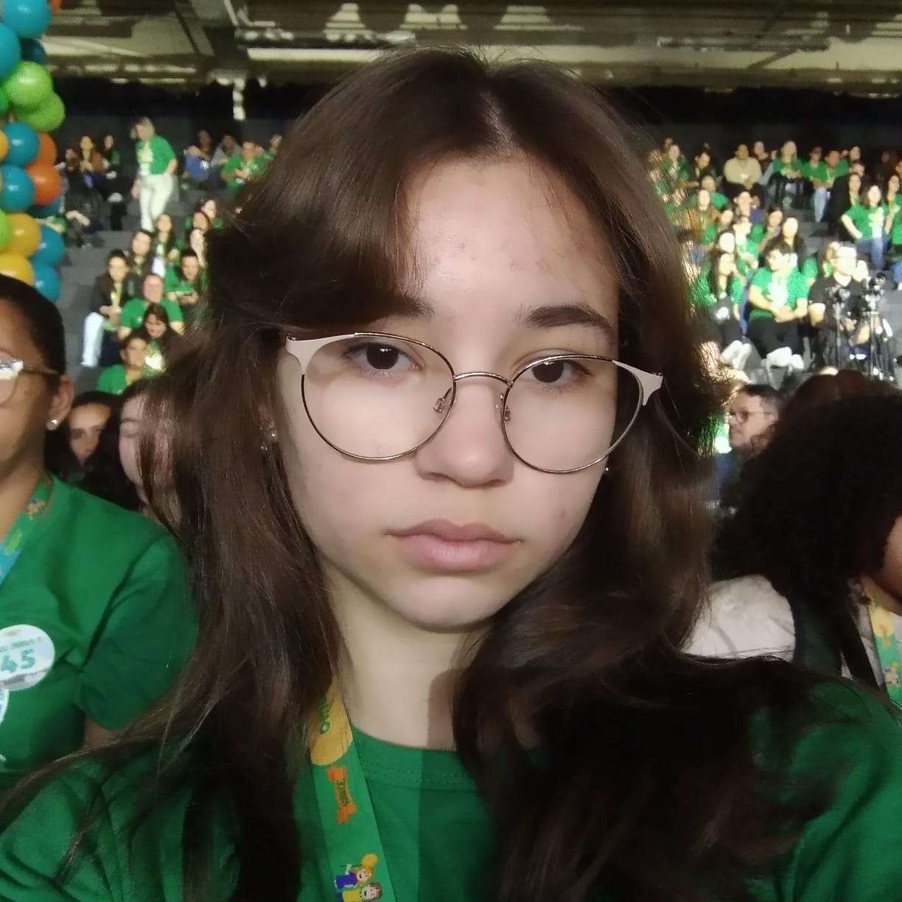

Sobre a JOEN
A JOEN – Jogos Educacionais Naturais é uma plataforma de videogames educativos criada para aproximar os jogadores da realidade do campo por meio de experiências interativas e divertidas. Como uma evolução da proposta original da Jornada de Energia Natural, o projeto utiliza a tecnologia para transformar o aprendizado sobre agricultura, sustentabilidade e meio ambiente em uma experiência prática e envolvente.
A agricultura faz parte do cotidiano de todos nós. Os alimentos que consumimos, além de diversas matérias-primas utilizadas pela indústria e grande parte da economia, dependem do trabalho realizado diariamente no campo. Apesar dessa importância, muitas pessoas possuem pouco contato com a realidade agrícola e desconhecem os desafios enfrentados pelos produtores rurais.
Pensando nisso, a JOEN permite que os usuários participem ativamente de atividades inspiradas no trabalho de agricultores e trabalhadores rurais. Em vez de apenas observar informações, os jogadores assumem responsabilidades, tomam decisões e enfrentam desafios que simulam situações presentes na realidade do campo, desenvolvendo uma compreensão mais ampla sobre produção, planejamento e utilização consciente dos recursos naturais.
Nossa Proposta
A principal missão da JOEN é proporcionar uma experiência educativa capaz de aproximar as pessoas do universo agrícola. Por meio de desafios, missões e simulações, os participantes exploram diferentes aspectos da produção de alimentos e do cuidado com o meio ambiente, compreendendo como essas áreas estão diretamente conectadas.
Mais do que jogar, os usuários são convidados a aprender, explorar e desenvolver uma nova visão sobre a importância da agricultura para a sociedade e sobre a necessidade de utilizar os recursos naturais de forma responsável para garantir o bem-estar das gerações presentes e futuras.
Nosso Objetivo
O principal objetivo da JOEN é permitir que os jogadores aprendam sobre agricultura, sustentabilidade e meio ambiente enquanto se divertem. Cada jogo foi desenvolvido com base em atividades inspiradas na realidade de agricultores e trabalhadores do campo, transformando conhecimentos práticos em experiências interativas.
Além dos desafios e mecânicas de jogo, a plataforma apresenta notas explicativas que ajudam o usuário a compreender como suas ações se relacionam com práticas reais utilizadas na produção agrícola, na preservação dos recursos naturais e na construção de um futuro mais sustentável. Dessa forma, a JOEN une programação, tecnologia e educação para tornar o aprendizado mais envolvente e significativo.
Venha Jogar!
A JOEN convida você a embarcar em uma jornada de conhecimento, estratégia e diversão. Explore nossos jogos, descubra novos desafios e vivencie experiências inspiradas em atividades que fazem parte da realidade de milhões de pessoas.
Prepare-se para jogar, aprender e descobrir, de forma interativa, a importância da agricultura, da inovação e do cuidado com o meio ambiente.
Sobre a Desenvolvedora

Jordana Hinze Chaves
Estudante do Ensino MédioDesde criança, sempre fui apaixonada por tecnologia. Lembro-me de acordar, pegar uma bolacha e um copo de suco, e ir para o computador assistir vídeos, despertando uma felicidade que me acompanha até hoje e que me levou a explorar o universo digital e da programação.
Ao longo do meu ensino médio, participei de diversas atividades que ampliaram minha visão sobre ciência e meio ambiente. Estive presente na Feira de Ciências da UFPR, participei da SBPC Jovem em Recife e frequentei anualmente a Semana do Meio Ambiente de Paranaguá. Essas experiências me permitiram conhecer diferentes projetos, tecnologias e iniciativas voltadas para a construção de um futuro mais sustentável.
Além das atividades acadêmicas, participei dos Jogos Escolares e tive a oportunidade de viajar por diferentes regiões do Paraná. Durante essas viagens, observei extensas plantações, empresas ligadas ao agronegócio e também as comunidades de agricultores que contribuem diariamente para a produção de alimentos.
Essas observações me fizeram perceber que a agricultura está presente em nosso cotidiano de forma muito mais significativa do que muitas vezes imaginamos. Embora eu nunca tenha trabalhado no campo e nem mesmo tenha obtido sucesso nas minhas tentativas de cultivo, compreendi que a agricultura é uma das bases da sociedade moderna. Sem ela, não haveria alimento, desenvolvimento econômico ou qualidade de vida.